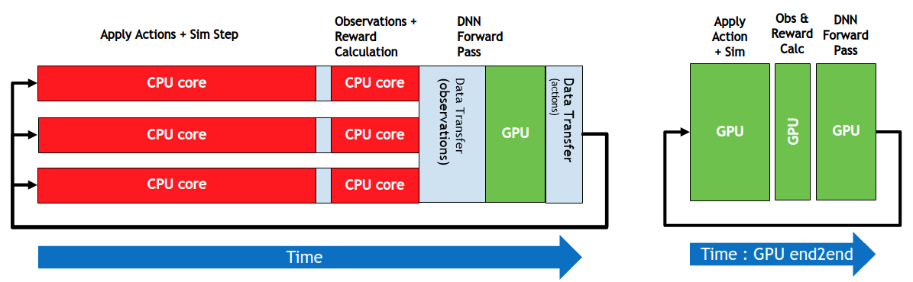
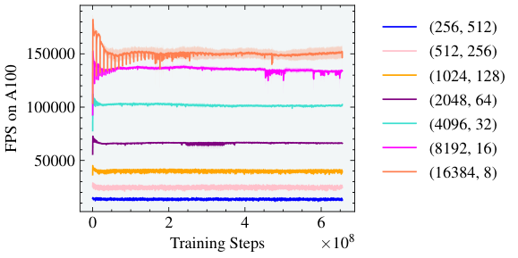

How a GPU Runs Your Policy
Fundamentals: optimisation · neural networks · floating point · memory and the 1 kHz loop · GPUs · processes and the kernel · dynamics algorithms · deploying policies · policy files · how neurons compute · bits, delays and control. Measured on my workstation (Intel i7-9700, RTX 2070 SUPER, Ubuntu 24.04, Linux 6.8); code in the site's tools/posts/.
A GPU is thousands of slow lanes fed by a wide, high-latency memory. It is extraordinary at throughput and poor at latency, which is exactly the split between training thousands of simulated robots and closing one robot's control loop. I measured the parts that matter on an RTX 2070 SUPER: memory bandwidth and coalescing, the roofline, kernel-launch overhead, policy latency against batch size, and kernel fusion for a batched impedance law. One surprise for this card: bf16 is slower than fp32.
1. The machine
The RTX 2070 SUPER (Turing, compute capability 7.5) has 40 streaming multiprocessors (SMs), each with 64 FP32 lanes and 8 tensor cores, a 4 MB L2 cache, and 8 GB of GDDR6 rated at 448 GB/s. CUDA organises work as a grid of thread blocks. Each block runs on one SM, its threads execute in warps of 32 that share an instruction stream (SIMT), and blocks share nothing but global memory. A load from DRAM takes hundreds of cycles, and the GPU hides that latency by keeping many warps resident and switching to one that is ready. Occupancy is the currency, and memory traffic is usually the bill.
2. Memory first
A device-to-device copy (Figure 1, left) reaches 387 GB/s for large buffers, 86% of the rated bandwidth. Small copies never get close. Below about a megabyte, every copy costs about 19 µs regardless of size, which is the cost of launching any GPU operation from Python and timing it. The host-to-device link on my machine measured 6.5 GB/s pinned. The card sits on a PCIe Gen3 ×8 link (7.9 GB/s theoretical), a reminder to keep data on the GPU.
How threads touch memory matters as much as how much they touch. DRAM is read in 32-byte sectors. When the 32 threads of a warp read consecutive 4-byte floats, one warp-wide load uses four full sectors. When they read floats spaced \(s\) apart, each thread pulls its own sector and most of each sector is wasted. A Triton kernel reading with stride \(s\) (Figure 1, right) delivers 164 GB/s of useful data at stride 1, 39 at stride 8 and 16 at stride 64. Lay out arrays so neighbouring threads read neighbouring addresses: store a batch of robots as structure-of-arrays (all \(q_1\), then all \(q_2\)), not array-of-structures.
3. The roofline
A kernel's speed is capped by arithmetic or by memory, whichever binds first. With arithmetic intensity \(I\) in FLOPs per byte moved, attainable throughput is \(\min(P, B\cdot I)\) for peak compute \(P\) and bandwidth \(B\) (Williams, Waterman and Patterson 2009). Figure 2 places measured kernels on this card's roofline. Large fp32 matrix multiplies reach 8.9 TFLOPS, 98% of the 9.1 TFLOPS specification; fp16 on tensor cores reaches 37.8. An element-wise add moves 12 bytes per FLOP and manages 0.033 TFLOPS, right on the bandwidth roof. A 256×256 policy layer at batch size one does 0.004 TFLOPS, far below either roof, because launch overhead, not hardware, is the limit there.
The right panel is the surprise. Turing has fp16 tensor cores but none for bf16, so a bf16 matrix multiply on this card runs at 5.0 TFLOPS, slower than fp32. On Ampere and later bf16 is the default half format; on a 2070 it is the wrong choice, and fp16 with loss scaling (floating-point note) is the fast path.
4. Latency against throughput
Launching one tiny kernel costs 6.2 µs of CPU time, and a launch plus synchronisation, the round trip a control loop needs, 19 µs. A 64-256-256-7 policy is five kernels. Figure 3 times one forward pass against batch size.
- At batch 1, the CPU takes 38 µs and eager GPU PyTorch 109 µs, almost all of it launches. Capturing the same forward pass in a CUDA graph, which records the kernel sequence once and replays it with one launch, brings the GPU down to 16 µs.
- At 4096 robots, the CPU needs 6.6 ms and the GPU 0.22 ms.
- At 65,536, the CPU needs 171 ms and the GPU 2.75 ms, 62 times faster, or 42 ns per robot.
So the answer to "should the policy run on the GPU" is batch size. One real robot at 1 kHz: CPU, or a CUDA graph if the policy is large. Thousands of simulated robots: the GPU, by a factor of tens to hundreds.
5. Fusion: fewer trips to memory
The batched Cartesian impedance law \(F = K\odot(x_d - x) - D\odot v\) is four element-wise kernels in eager PyTorch, with three temporary arrays written and read back: twelve passes over memory. A fused kernel reads each input once and writes once: six passes. Triton makes that a few lines:
@triton.jit
def impedance_kernel(K, D, xd, x, v, F, n, BLOCK: tl.constexpr):
i = tl.program_id(0) * BLOCK + tl.arange(0, BLOCK) # this program's slice
m = i < n # guard the ragged end
f = tl.load(K + i, mask=m) * (tl.load(xd + i, mask=m) - tl.load(x + i, mask=m)) \
- tl.load(D + i, mask=m) * tl.load(v + i, mask=m)
tl.store(F + i, f, mask=m) # each input read once, one write
impedance_kernel[(triton.cdiv(n, 1024),)](K, D, xd, x, v, F, n, BLOCK=1024)For a million robots (6 million entries) the fused kernel takes 407 µs against 778 µs, 1.9 times faster, and moves data at 371 GB/s, 96% of the measured peak (Figure 4). Below about 16,000 robots both are stuck at the launch floor. Simulators such as Isaac Gym, Brax and MJX get their speed from the same two ideas: keep the whole pipeline on the GPU and fuse work into few, large kernels (Figures 5 and 6).


6. Brains and GPUs
A GPU gets throughput from many slow lanes and pays in latency; so does the brain, with far slower units and far more of them. Both hide latency the same way, by having other work ready, and in the brain's case by predicting. A robot's lowest control loop needs the opposite trade, low latency for one stream, which is why it belongs on a CPU core or in dedicated hardware, while learning and simulation belong on the GPU (see memory and the 1 kHz loop).
7. Checklist
- Count bytes before FLOPs: most robot-learning kernels are memory-bound.
- Structure-of-arrays layouts, so warps read contiguous memory.
- Batch, fuse, or capture in a CUDA graph; at small batch the launch is the cost.
- Check what the tensor cores support before choosing a half-precision format.
- Keep data on the device; on this ×8 link the bus is about 60 times slower than the card's memory.
References
| Reference | Venue |
|---|---|
| Williams, Waterman, Patterson, Roofline: an insightful visual performance model for multicore architectures | Commun. ACM 2009 |
| Tillet, Kung, Cox, Triton: an intermediate language and compiler for tiled neural network computations | MAPL 2019 |
| NVIDIA, CUDA Programming Guide | documentation |
| Makoviychuk et al., Isaac Gym: High Performance GPU-Based Physics Simulation for Robot Learning | NeurIPS Datasets & Benchmarks 2021 |
| Rudin et al., Learning to Walk in Minutes Using Massively Parallel Deep RL | CoRL 2021 |
| Freeman et al., Brax: A Differentiable Physics Engine for Large Scale Rigid Body Simulation | NeurIPS Datasets & Benchmarks 2021 |
| Micikevicius et al., Mixed Precision Training | ICLR 2018 |